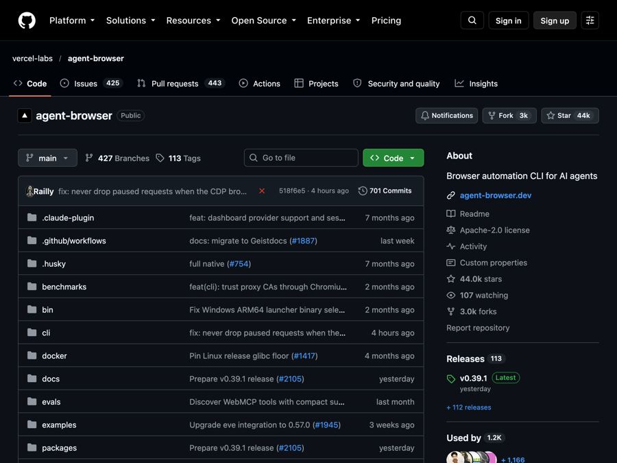

agent-browser: let your AI helper click around websites for you
agent-browser is a free tool from Vercel Labs that lets AI coding agents open, read, and click through real websites.

The problem it solves
AI coding helpers like Claude Code and Codex are great at writing code. But ask one to check a website, and many hit a wall. They cannot see the page, click a button, or fill in a form the way you would.
So you end up as the middle person. You open the site, copy what you see, paste it back to the AI, and repeat. That gets old fast, especially when you want the AI to test a sign-up form or read a long article.
agent-browser gives the AI its own web browser to drive.
What it is
agent-browser is a free, open-source tool from Vercel Labs, the experiments arm of the web company Vercel. Open source means the code is public for anyone to use and check.
It is a command-line tool, meaning you control it by typing commands in Terminal, not by clicking buttons. But it is not really made for you to type into. It is made for AI agents (AI helpers that can take actions on their own) to use.
Here is how it works. The AI tells agent-browser to open a page. agent-browser hands back a simple list of what is on the page, like "button: Submit" or "textbox: Email," each with a short label such as @e2. The AI then says "click @e2," and agent-browser does it.
It is written in Rust, a programming language known for speed.
Who it's for
Be honest with yourself here. This is a tool for people who already use AI coding helpers.
- Developers who want their AI agent to test websites and web apps.
- People building AI agents that need to browse the web.
- Testers who want to automate checks like "does the login page work?"
- Tech-savvy makers already comfortable with Terminal and tools like Claude Code, Codex, or Cursor.
If you have never used Terminal or an AI coding tool, this one is not your starting point.
What you can do with it
- Open and read pages. It can open a site, list what is on it, and pull out the text in an AI-friendly form.
- Click, type, and fill forms. The AI can press buttons, type into boxes, and move the mouse.
- Take screenshots. It can even add numbered labels on buttons and links, so the AI can match what it sees to what it can click.
- Stay logged in. It can reuse your Chrome login, save sessions, or keep passwords in a locked, encrypted vault. The README says the AI never sees those passwords.
- Watch it live. A local dashboard shows the browser screen and every command in real time. You can also open a visible browser window to see what it is doing.
- Talk to it in plain English. The
chatcommand turns instructions like "open google.com and search for cats" into browser actions. This needs a Vercel AI Gateway key. - Plug into AI tools. It works as a skill for Claude Code, Codex, Cursor, Gemini CLI, GitHub Copilot, and others. It also runs as an MCP server (a standard way for AI apps to use outside tools).
- Add safety rails. Limit it to trusted websites, ask for approval before risky actions, and cap how much text it sends back.
How to start, step by step
You need a Mac, Windows, or Linux computer, Node.js (which includes npm, a tool installer), and an AI coding helper.
- Open Terminal and install it:
npm install -g agent-browser
On a Mac with Homebrew, brew install agent-browser works too.
- Download a browser for it to use (first time only):
agent-browser install
- Add it as a skill to your AI coding helper:
npx skills add vercel-labs/agent-browser
- Ask your AI agent to use it. The README suggests something as simple as: "Use agent-browser to test the login flow. Run agent-browser --help to see available commands."
- Watch it open the site, read the page, and click through.
Good to know
- The tool is free. The optional plain-English
chatfeature uses the Vercel AI Gateway, which needs an API key (a password for an online service), and that service may charge you. - Your AI helper may cost money. Claude Code, Codex, and similar tools usually need a paid plan or account.
- It uses Chrome. It downloads Google's official testing version of Chrome. It can also find Chrome or Brave already on your computer.
- Safety features are opt-in. Things like the website allowlist and action approvals are off until you turn them on. Consider using them when an AI is driving.
- Linux needs extras. On Linux, run
agent-browser install --with-depsto add the system parts it needs. - License: Apache-2.0. You are free to use it, change it, and even use it in a business. Just keep the copyright and license notice.
The bottom line
agent-browser gives AI coding helpers their own fast, scriptable web browser, so they can read pages, click buttons, and test sites without you copying and pasting. It is a developer tool through and through. If you already work with AI agents, it is a simple, free upgrade.
Get it: github.com/vercel-labs/agent-browser
📲 Watch the 30-second video on Instagram
Keep reading

DBX: one small free app to open and edit 100+ kinds of databases
DBX is a free, tiny app that lets you browse, search and edit over 100 kinds of databases, with an AI helper that writes queries for you.

PureMac: free up space on your Mac without a subscription
PureMac is a free, open-source Mac cleaner that removes junk, fully uninstalls apps, and never tracks you or tries to scare you.

Strata: run a big, private AI chatbot on your own gaming PC
A free one-click installer that runs a large Qwen AI model on a normal gaming PC, so your chats never leave your computer.